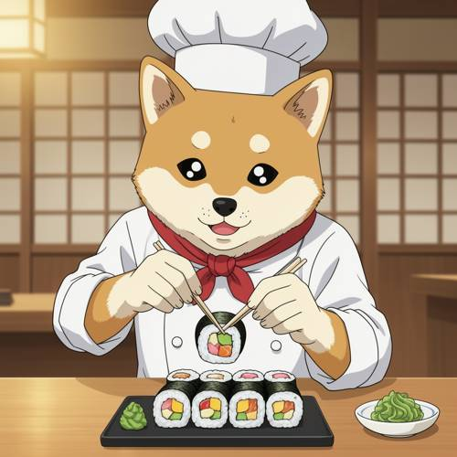
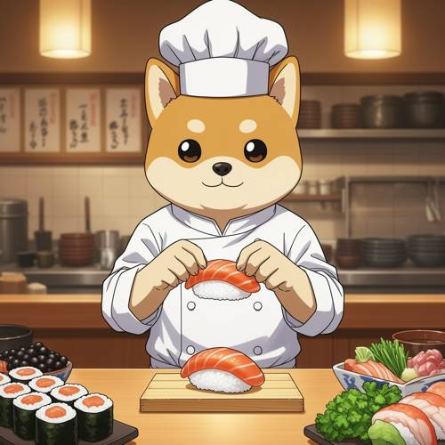

Grammar — In the Japanese animation style, an anthropomorphic Shiba Inu wearing
In the Japanese animation style, an anthropomorphic Shiba Inu wearing a chef's uniform is skillfully pinching an exquisite sushi with his front paws.

Direct — one call, no iteration

Continuum — Qwen3.8-27B + FLUX.2-dev
Judge — Direct
PASSGrammar - Pronoun Reference — The image depicts an anthropomorphic Shiba Inu, and there are no visual features that contradict the use of the masculine pronoun 'his'.
PASSStyle — The image is rendered in a style consistent with Japanese animation, characterized by clean line art, large and expressive eyes, and cel-shaded coloring.
FAILAction - Hand (Character/Anthropomorphic) — The anthropomorphic Shiba Inu is holding chopsticks with its paws, which are rendered as human-like hands, and is using the chopsticks to pick up a piece of sushi. This does not match the prompt's description of 'pinching an exquisite sushi with his front paws,' which implies direct contact between the paws and the sushi. The hands themselves are well-formed with five fingers.
Judge — Continuum
PASSGrammar - Pronoun Reference — The prompt refers to the anthropomorphic Shiba Inu with the pronoun 'his'. The image depicts a single anthropomorphic Shiba Inu as the central subject, to whom the pronoun correctly refers.
PASSStyle — The image is rendered in a Japanese animation style, characterized by clean lines, large expressive eyes on the character, and a vibrant, cel-shaded color palette.
PASSAction - Hand (Character/Anthropomorphic) — The anthropomorphic Shiba Inu is shown holding a piece of nigiri sushi with its two front paws, which are depicted as hands with four digits each, including a thumb. The hands are well-formed without any visible distortion, and they are actively engaged in the action of handling the sushi.
What the agent did
Thinking
The user is asking for an anime-style image of an anthropomorphic Shiba Inu chef skillfully making sushi with his front paws. Let me generate this with flux2-dev. Prompt: "Japanese anime style, anthropomorphic Shiba Inu wearing a chef's uniform, standing upright, skillfully pinching an exquisite nigiri sushi with his front paws, focused expression, warm kitchen lighting, detailed anime cel shading, high quality" Let's generate it.
Step 1 — `generate_image`
{
"prompt": "Japanese anime style, a cute anthropomorphic Shiba Inu standing upright in a sushi restaurant kitchen, wearing a white chef's uniform with a chef's toque hat, focused proud expression, both front paws delicately pinching a piece of exquisite nigiri sushi topped with glistening salmon, fresh ingredients and wooden sushi counter visible, warm restaurant lighting, detailed cel shading, expressive anime eyes, high quality anime illustration",
"width": 1024,
"height": 1024,
"model": "flux2-dev"
}
Result img_0
Thinking
The image turned out great. Let me check the details: - Japanese anime style ✓ - Anthropomorphic Shiba Inu ✓ - Chef's uniform (white chef coat + chef's hat) ✓ - Skillfully pinching sushi with front paws ✓ (holding a piece of salmon nigiri in both paws) - Sushi is exquisite ✓ Let me check if there are any issues. The character looks like a Shiba Inu with orange fur. The chef's uniform is good. Both front paws are pinching the salmon nigiri. Looks good. Small point to check: the front paws—there's a slight anatomical concern, but in the image it looks fine. To make sure the paws look right, I'll zoom in and check. The image looks solid overall. To make sure there are no artifacts, I'll check the hands/sushi area and then mark it as the best.
Looking at the cropped image, the front paws are pinching the salmon nigiri neatly. Both paws are gripping both ends of the nigiri—actually, it looks like the chef is pinching the top of the salmon with both hands, as if carefully shaping it. This looks natural and skillful. The fingers have the appearance of paws with small nails, which fits the anthropomorphic style. One small point: there's a piece of fish (a shioyobi?) in the lower left. Not a problem. This image satisfies all the prompt requirements: - Japanese anime style ✓ - Anthropomorphized Shiba Inu ✓ - Chef uniform ✓ - Pinching an exquisite sushi with the front paws ✓ Good enough. I'll mark it as the best and stop.
Model
The close-up shows both front paws gripping the salmon nigiri cleanly in a skillful pinch — no finger/paw artifacts, and the sushi (glossy salmon over glossy rice) looks exquisite. All elements of the prompt are present: - **Japanese anime style** — clean cel shading, expressive eyes, warm kitchen background - **Anthropomorphic Shiba Inu** — standing upright, classic Shiba coloring - **Chef's uniform** — white double-breasted chef's coat and toque - **Skillfully pinching sushi** — both paws precisely pinning the salmon nigiri over the counter
Step 3 — `mark_best`
{
"image": "img_0",
"reason": "Fully matches the prompt: anime-style Shiba Inu chef in uniform pinching a salmon nigiri with both front paws; clean anatomy verified by close-up inspection."
}
Thinking
I marked the best one. The image is complete and matches the prompt. I'll stop here.
Model
The image is complete and marked as the best result. It's a warm, detailed anime illustration of the Shiba Inu chef delicately pinching a piece of salmon nigiri with both front paws, standing behind his sushi counter with rolls, fresh fish, and a cozy restaurant kitchen in the background.